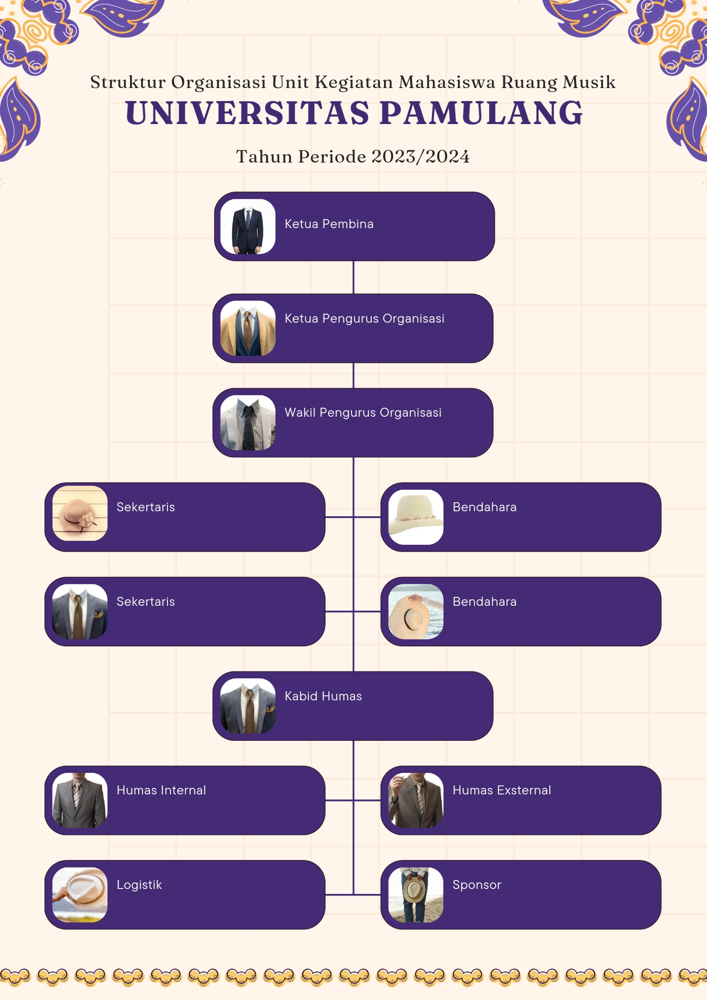
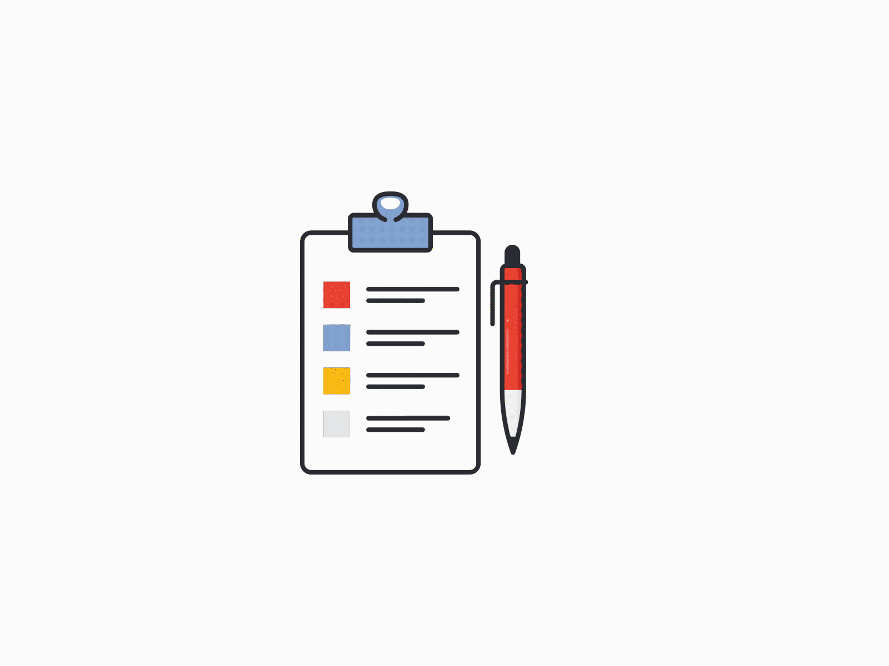
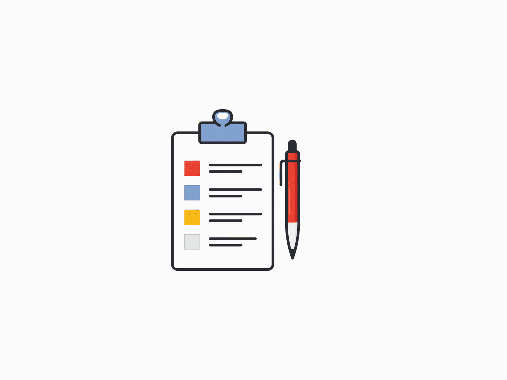

UNIT KEGIATAN MAHASISWA ( UKM ) UNIVESITAS PAMULANG ( UNPAM ) RUANG MUSIK ( RUMUS )
Musik turut berperan penting dalam dunia pendidikan. dengan bermusik maka kita menciptakan sebuah karya. Kemampuan dalam bermusik juga dapat mengembangkan suatu kreatifitas anak Bangsa dan dengan bermusik kita dapat menyampaikan sebuah gagasan atau ungkapan yang dapat disampaikan secara lisan. Mahasiswa sebagai insan akademik, diwajibkan memiliki kemampuan dalam berkreatifitas dalam bentuk sebuah karya. bagi sebagian mahasiswa memang terkesan sulit, sehingga kemampuan mahasiswa dalam bermusik sangatlah jarang oleh karna itu kemampuan kita harus terus di asah dan di latih agar dapat menghasilkan sebuah karya musik yang berkualitas. oleh karena itu, dengan adanya Unit Kegiatan Mahasiswa Ruang Musik ( RUMUS ) ini diharapkan dapat memfasilitasi mahasiswa yang berminat dalam bidang terutama bermusik. ukm rumus akan mengadakan pelatihan – pelatihan dalam bidang bermusik sehingga di harapkan mahasiswa/mahasiswi mampu menghasilkan sebuah karya yang berkualitas dan serta mampu berdaya guna dalam dunia permusikan di tanah air.
STRUKTUR KEORGANISASIAN UNIT KEGIATAN MAHASISWA RUANG MUSIK
.gif)
Klik Open
Wadah ini adalah Unit Kegiatan Mahasiswa Universitas Pamulang bermusik yang dinamakan Ruang Musik ( RUMUS ) . Meyakini bahwa tujuan dan cita-cita Kami Mahasiswa Universitas Pamulang hanya ingin memberikan yang terbaik untuk negri ini yang didapat dijadikan sebuah landasan atau sebuah ajang prestasi agar mahasiswa/ mahasiswi Universitas Pamulang agar dapat menyalurkan Hobinya masing-masing terutama didalam bidang musik agar kami dapat membanggakan Universitas yang kami naungi ini. dan atas petunjuk Tuhan Yang Maha Kuasa dan Maha Pemberi Petunjuk. maka kami disertai usaha-usaha teratur, terencana dan penuh keyakinan, kami mahasiswa Universitas Pamulang, menghimpun diri dalam Unit Kegiatan Mahasiswa Universitas Pamulang Ruang Musik ( RUMUS ) memohon doa dan dukungan pada semuanya pihak yang terkait.
FORMULIR PENDAFTARAN UKM RUMUS ANGGOTA BARU.
.gif) 

.gif)
Klik Daftar
PERSYARATAN PENDAFTARAN UKM RUMUS ANGGOTA BARU
✅ Bagi calon peserta anggota Unit Kegiatan Mahasiswa Ruang Musik Baru diharapkan bagi calon peserta anggota baru dapat mengisi formulir sesuai intruksi yg telah diberikan dalam formulir pendaftaran.
✅ Rekan Mahasiswa / calon peserta anggota baru yang dapat mengikuti pendaftaran Unit Kegiatan Mahasiswa Ruang Musik baru adalah rekan Mahasiswa yang masih aktif di Universitas Pamulang ( UNPAM ).
✅Rekan Mahasiswa Unit kegiatan Mahasiswa Ruang Musik agar wajib mentaati dan mengikuti kebijakan-kebijakan yang telah diberikan oleh Unit Kegiatan Mahasiswa Ruang Musik Universitas Pamulang.
✅
Bagi rekan mahasiswa Unit Kegiatan Mahasiswa Ruang Musikwajib mengikuti media sosial Ruang Musik ( RUMUS )sebagai wadah / tempat pusat media informasi.